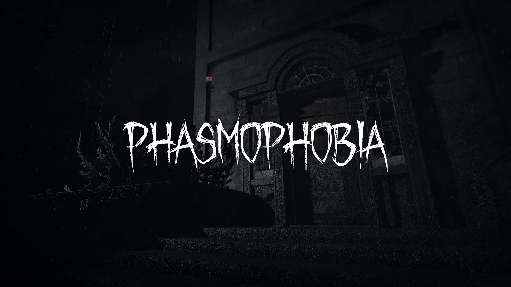

Phasmophobia
Genres: Survival horror, Puzzle
Website
Developer: Kinetic Games
Publisher: Kinetic Games
Platforms: Microsoft Windows, PlayStation 5, Xbox Series X/S
Released: 2024, October 29
Rated: Not Rated
Phasmophobia is a paranormal horror game developed and published by British indie game studio Kinetic Games. The game became available in early access for Microsoft Windows with virtual reality support in September 2020. In the game, one to four players take on the role of ghost hunters who work to complete a contract where they must identify the type of ghost haunting a designated site and complete other optional objectives.